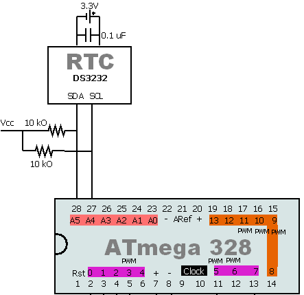
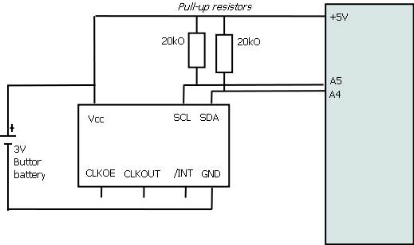
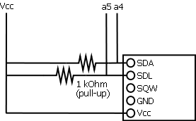

Foreword about prices
If you are lucky and live in Japan like me, just buy your RTC 8564 at Akizukidenshi.
The RTC module (on a small IC) %20 a coin battery %20 coin battery holder is 650 ¥ so say 7 USD (buy separately, crystal is already in the chip).
The Sparkfun (forgive me for pointing that for I really love your job guys) is 20 USD (%20 port for the guys in Japan like me). Price difference is a factor 3, and since the 2 modules have nearly the same functions that worth being said (in fact the 8564 is much more powerful with integrated alarm that can work on weekdays, possible to have extra clock output at select frequence...)
DS3232 (Maxim)
A fantastic temperature compensated RTC ! %20/- 2 minutes drift over a year, a dream. Comes with its inbuilt oscillator, so just plug it on a battery, read it through I2C as usual, and there you go. You'll find in the here under zip file a RTCDS3232.h file that might save you some time (but it's really just the basic usual RTC stuff). I used it in the project
ardReveil v3.
ARD_Reveil_v3.zip

DS3234 (Maxim)
I have a board to use it, see the
WordClock and contact me or print your own, the source is included.
Links
Same as DS3232 BUT with SPI interface
RTC-8564NB (Epson Toyocom)
Documentation
R8564_JE_NB_E08X.pdf ETM11E_04_R8564JENB.pdf

RTC4543-SA (Epson Toyocom)
Documentation
R4543SASB_appnotes.pdf
RTC1307 (Maxim)
Schema

Nota bene:
- It uses 5v, not 3.3v (at least my model DS1307)
- Do NOT plug the GND of the DS1307 to the GND. You can read fine but update of time stops (at least in what you read)
- I should proofread the doc but I think that then the copy of the work registers to the temps registers stops
- Plug only 3 wires : Vcc, SDA & SDL using the pullups
- Pullups >= 1kOhm shall be very fine
- SQW does not need to be plugged
Documentation
Inside
Useful codes
Taken from http://combustory.com/wiki/index.php/RTC1307_-_Real_Time_Clock
Download the sample progam (plug and will send on serial each second the time) : RTC_Test.pde
#define DS1307_I2C_ADDRESS 0x68 // This is the I2C address
...
// Convert normal decimal numbers to binary coded decimal
byte decToBcd(byte val)
{
return ( (val/10*16) %20 (val%10) );
}
// Convert binary coded decimal to normal decimal numbers
byte bcdToDec(byte val)
{
return ( (val/16*10) %20 (val%16) );
}
// 1) Sets the date and time on the ds1307
// 2) Starts the clock
// 3) Sets hour mode to 24 hour clock
// Assumes you're passing in valid numbers, Probably need to put in checks for valid numbers.
void setDateDs1307()
{
second = (byte) ((Serial.read() - 48) * 10 %20 (Serial.read() - 48)); // Use of (byte) type casting and ascii math to achieve result.
minute = (byte) ((Serial.read() - 48) *10 %20 (Serial.read() - 48));
hour = (byte) ((Serial.read() - 48) *10 %20 (Serial.read() - 48));
dayOfWeek = (byte) (Serial.read() - 48);
dayOfMonth = (byte) ((Serial.read() - 48) *10 %20 (Serial.read() - 48));
month = (byte) ((Serial.read() - 48) *10 %20 (Serial.read() - 48));
year= (byte) ((Serial.read() - 48) *10 %20 (Serial.read() - 48));
Wire.beginTransmission(DS1307_I2C_ADDRESS);
Wire.send(0x00);
Wire.send(decToBcd(second)); // 0 to bit 7 starts the clock
Wire.send(decToBcd(minute));
Wire.send(decToBcd(hour)); // If you want 12 hour am/pm you need to set
// bit 6 (also need to change readDateDs1307)
Wire.send(decToBcd(dayOfWeek));
Wire.send(decToBcd(dayOfMonth));
Wire.send(decToBcd(month));
Wire.send(decToBcd(year));
Wire.endTransmission();
}
// Gets the date and time from the ds1307 and prints result
void getDateDs1307()
{
// Reset the register pointer
Wire.beginTransmission(DS1307_I2C_ADDRESS);
Wire.send(0x00);
Wire.endTransmission();
Wire.requestFrom(DS1307_I2C_ADDRESS, 7);
// A few of these need masks because certain bits are control bits
second = bcdToDec(Wire.receive() & 0x7f);
minute = bcdToDec(Wire.receive());
hour = bcdToDec(Wire.receive() & 0x3f); // Need to change this if 12 hour am/pm
dayOfWeek = bcdToDec(Wire.receive());
dayOfMonth = bcdToDec(Wire.receive());
month = bcdToDec(Wire.receive());
year = bcdToDec(Wire.receive());
Serial.print(hour, DEC);
Serial.print(":");
Serial.print(minute, DEC);
Serial.print(":");
Serial.print(second, DEC);
Serial.print(" ");
Serial.print(month, DEC);
Serial.print("/");
Serial.print(dayOfMonth, DEC);
Serial.print("/");
Serial.print(year, DEC);
}
DS1302
Another Maxim timekeeper, a bit cheaper (no temperature compensation, a serial communication bus only,...) but has the merit to be cheap (< 3USD board with delivery from eBay).